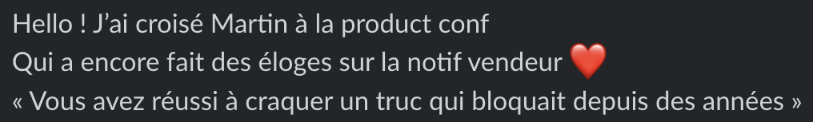
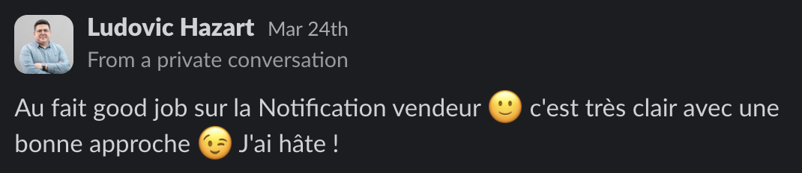

Vision produit
notification vendeur
«Quand on met en favoris, ça envoie direct un message au vendeur... Sans rien demander... Enlevez ce truc !»
Pour les vendeurs, gérer ces notifications revient à trier sans critère. Ils reçoivent des signaux sans pouvoir distinguer qui vaut la peine d'une réponse. La vision : donner au vendeur le pouvoir de prioriser les bons contacts, au bon moment.
Analyse du questionnaire sur les comportements acheteurs et vendeurs, mapping de la vision, maquettes, protocole de tests utilisateurs RITE, prototypes interactifs, passation des tests, itérations MVP. Atelier d'idéation et priorisation avec la PM pour aligner la vision.
Ces fonctionnalités n'avaient pas de place naturelle dans la messagerie. La première tentative : regrouper les conversations par article pour créer une forme de centre de gestion à l'intérieur de la messagerie. Ça ne tenait pas, une messagerie n'est pas un centre de gestion, et forcer ce regroupement cassait la logique du produit. J'ai proposé une autre approche : une bannière temporaire en haut de la messagerie, avec une card par article ayant reçu des mises en favoris. Chaque card affiche photo, titre, nombre de favoris et un indicateur de nouveau favori depuis la dernière visite. Elle redirige vers une page d'action par article, qui permet d'envoyer des offres et messages en batch.


Nous avons anticipé que l'ouverture automatique de la notification allait amplifier un problème déjà présent : le ghosting. Plutôt qu'attendre que ce risque devienne un problème de delivery, nous avons construit une vision qui n'était pas dans le brief, co-présenté à Lucie Leroy Lusson (Head of Product), Ludovic Hazart (directeur de la tribe Horizontale) et Martin Berthonneau (CPO), et obtenu sa priorisation en roadmap face à d'autres sujets.


L'ouverture de la notification vendeur en automatique (décision business) a augmenté par 3 le volume d'offres envoyées par les vendeurs aux acheteurs. La conversion côté acheteur n'a augmenté que de 5% (taux de payin) malgré cet afflux. Nous avions anticipé cet effet : cette vision a précisément été conçue pour donner aux vendeurs les outils pour gérer ce volume. Le MVP est en AB test.
Ce projet est une première pierre sur un segment restreint. Il a posé les bases d'une vision plus large : une messagerie orientée "action", qui a remporté un hackathon interne et qui est le sujet principal de Q4.
Nous travaillons aujourd'hui à améliorer la conversion acheteur.
Solution : Les offres dans la messagerie sont mises en valeur et contextualisées pour aider les utilisateurs à prendre une décision et faciliter leur acceptation.
Cette itération est faite en convergence avec le sujet Q4 de la contextualisation du prix dans le dépôt afin d'offrir une cohérence de bout en bout.


J'avais identifié la tension architecturale (l'absence de centre de gestion vendeur) et choisi de m'adapter à la contrainte de delivery dans le périmètre de la FT pour livrer. Si c'était à refaire, j'aurais aussi posé ce problème à l'échelle de la tribe en parallèle, pas seulement résolu la contrainte dans le scope de mon équipe.
Ce que cette expérience démontre : la capacité à anticiper un effet business avant qu'il devienne un problème de delivery, à proposer une vision plus ambitieuse que le brief initial pour influencer la roadmap, et à porter ce sujet jusqu'au niveau de la direction.